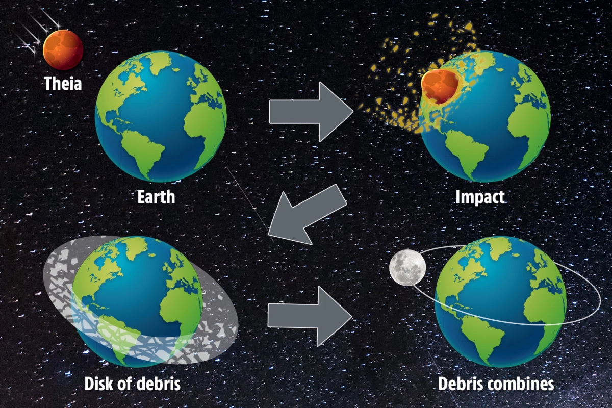

Vida Antes de los
Dinosaurios
La Era Precámbrico
4,540 millones de años a 542 millones de años
El periodo Precámbrico es el periodo más largo y viejo de la historia de nuestro planeta Tierra. El 88% de la historia de la Tierra es del periodo precámbrico. La Era Precámbrico empieza cuando la Tierra se formó hace 4.6 billones de años, hasta el periodo cámbrico que fue hace 541 millones de años, momento en que comenzó la vida multicelular.
El periodo Precámbrico es uno de los periodos menos conocido, a pesar de que representa mas más del 88% de la historia de la Tierra. Lo único que se sabe sobre el periodo precámbrico es que fue descubierto en los años 1960’s. Se cree que, durante el periodo Precámbrico, hubo un planetesimal igual de grande que Marte, que colisionó con el planeta Tierra. Poco después, lo poco que quedaba de los dos planetas formaron la Luna.
El Termino “Precámbrico” es utilizado por geólogos y paleontólogos para discusiones generales que no requieren un nombre de eón más específico. Sin embargo, tanto el Servicio Geológico de los Estados Unidos, como la comisión Internacional de estratigrafía consideran que el término es informal. El Periodo precámbrico consta de 3 eones: el Hadeano, el Arcaico y el Proterozoico.
© bizleyart / bizleyart.com
El Planeta Theia

Theia es un supuesto planetesimal, igual de grande que Marte, que fue formado hace billones de años en el sistema solar. Según la hipótesis, Theia colisiono con el planeta Tierra hace 4.4 billones de años atrás. El nombre Theia es un nombre de la mitología griega, era la madre de Selene, la luna, que supuestamente se formó en la colisión de la Tierra y Theia. No se sabe mucho del planetesimal, ya que sigue siendo una hipótesis con mucho misterio.
© NASA/JPL-Caltech
Teoría del gran impacto
La hipótesis del gran impacto tiene mucho apoyo y es bien favorecida en la comunidad científica para la formación de la Luna. La evidencia de apoyo incluye: el giro de la Tierra, la órbita de la Luna con orientaciones similares, muestras de la Luna que indican que la superficie de la Luna estuvo una vez fundida, el núcleo de hierro relativamente pequeño de la Luna, con menor densidad en comparación con la Tierra, evidencia de colisiones similares, en otros sistemas estelares (que dan como resultado discos de escombros), y que las colisiones gigantes son consistentes con las principales teorías de la formación del sistema solar y finalmente, las proporciones de isotopos son idénticas, lo que implica un origen común.
Credit: Getty - Contributor
Referencias
- Walking with Wiki - Theia (planet)
- UCLA Study Shows the Moon is Older Than Previously Thought
- Forming the lunar farside highlands by accretion of a companion moon
- A hit-and-run giant impact scenario
- hapter 2.5 The Oldest Terrestrial Mineral Record: A Review of 4400 to 4000 Ma Detrital Zircons from Jack Hills, Western Australia